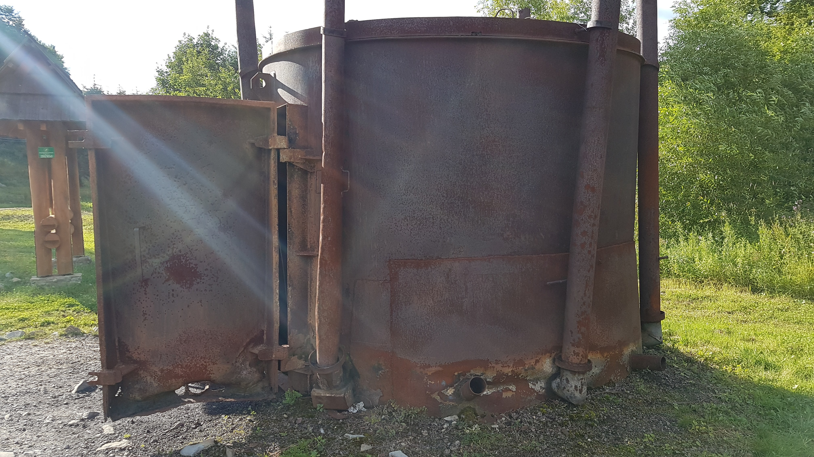

Węgiel drzewny pozyskuje się z drzew liściastych takich jak buk, dąb, olcha czy brzoza. Ten najbardziej wartościowy pozyskuje się z wysuszonego drewna bukowego i grabowego, ponieważ są one odpowiednio twarde i mają dobre właściwości palne.

Węgiel drzewny otrzymuje się w procesie spalania drewna, przy ograniczonym dostępie tlenu. Do 1980 roku najpopularniejszym rozwiązaniem było wypalanie go w mielerzach. Obecnie wykorzystuje się do tego retorty.

Pierwszym krokiem w tworzeniu mielerzy było wykopanie rowu o głębokości 0,2 do 0,5 metra i promieniu od ok. 4 do 6 metrów. Kolejnym, ustawienie po okręgu drewnianych szczap o długości ok. 1 metra oraz wypełnienie pozostałych miejsc drewnem. Ważne jest również to, aby nie mieszać różnych rodzajów drewna, ponieważ charakteryzują się one innym czasem spalania. Drewno układano do wysokości ok. 2 – 3 metrów. Stos dodatkowo okładano darnią i uszczelniano gliną. Robiono to, aby ograniczyć dostęp powietrza oraz, aby płomienie nie wydostawały się na zewnątrz. Do obłożenia mielerza stosowano również siano oraz słomę.

Po wypaleniu drewna mielerz stygł nawet przez kilkanaście godzin. Gdy był on już zimny oddzielano węgiel drzewny od gliny oraz pakowano go do worków. Pozyskiwano go w ilości ok. 40% masy drewna. Resztki niedopalonego drewna mogły zostać użyte ponownie w procesie wytwarzania węgla.

Innym sposobem uzyskania węgla drzewnego jest wypalanie w retorcie. Jest to pionowy walec wykonany z blachy o grubości 1 cm i o wysokości ok. 3 metrów. Drewno do retorty ładowane jest przez metalowe drzwi. Mieści się w niej ok. 12 metrów kwadratowych szczap. Dopływ powietrza regulowany jest przez węglarza, który kontroluje wywietrzniki znajdujące się na górze retorty. Po zakończonym procesie wypalania retort chłodzi się przez cały dzień.
